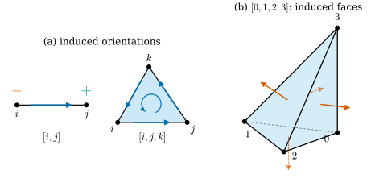
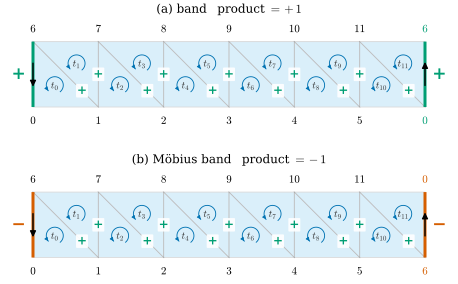

33.3 Orientation
Goals
- oriented simplex를 vertex 순서의 even permutation equivalence class로 정의하고, \(\R^k\) 안에서는 그것이 determinant의 부호와 같음을 증명할 수 있다.
- simplex가 face에 유도하는 orientation과 두 simplex의 relative orientation을 계산할 수 있다.
- consistent orientation을 정의하고, 닫힌 chain을 따라 relative orientation을 곱한 부호로 그것이 불가능함을 보일 수 있다(Möbius band).
- 연결된 complex의 consistent orientation이 정확히 둘이라는 것과 orientation propagation algorithm이 옳다는 것을 증명하고 구현할 수 있다.
Prerequisites
- Definition 33.1.18: abstract simplicial complex. Definition 33.2.15: pure simplicial complex
- Definition 1.6.6: determinant, (1.6.5): permutation의 부호, Definition 1.6.11: vector space의 orientation
- (비교용) Definition 31.1.5: Track 1의 consistent orientation
Motivation
Section 33.2까지 simplex는 vertex의 집합이었다. 그래서 \(\{i, j\}\)와 \(\{j, i\}\)는 같은 edge다. 그러나 mesh 위에서 무언가를 잴 때는 방향이 필요하다. vertex마다 값 \(u\)가 주어졌을 때 edge \(\{i, j\}\) 위의 변화량은 \(u_j - u_i\)일 수도 \(u_i - u_j\)일 수도 있고, 어느 쪽인지는 edge를 \(i\)에서 \(j\)로 읽는지 반대로 읽는지가 정한다. triangle의 normal도 세 vertex를 어느 방향으로 도는지를 정해야 정의된다(Section 31.1).
이 절은 세 단계로 간다. simplex 하나에 방향을 주고(oriented simplex), 이웃한 두 simplex의 방향이 서로 맞는지 정의하고(relative orientation), complex 전체에 서로 맞는 방향을 고를 수 있는지 묻는다(consistent orientation). 마지막 질문의 답이 언제나 “예”는 아니다. Möbius band가 반례이고, 그 이유를 부호의 곱 하나로 증명한다.
Oriented Simplices
orientation은 vertex의 순서에서 나온다. 순서를 바꾸는 방법에는 짝과 홀이 있다. permutation \(\pi\)(\(\{0, \dots, k\}\)에서 자신으로 가는 bijective map)의 부호는 Section 1.6에서 \(s(\pi) = \det P_\pi\)로 정의했다(\(P_\pi\)는 \(j\)번째 열이 \(e_{\pi(j)}\)인 행렬, (1.6.5)). 이 절에서는 이것을 \(\sgn\pi\)로 쓰고, 필요한 성질을 모아 둔다.
Lemma 33.3.1 (sign of a permutation). permutation \(\pi, \rho\)에 대하여 (a) \(\sgn(\pi\circ\rho) = \sgn\pi\,\sgn\rho\), (b) 두 원소만 맞바꾸는 transposition은 \(\sgn = -1\), (c) \(\sgn\pi = (-1)^{\operatorname{inv}(\pi)}\)이다. 여기서 \(\operatorname{inv}(\pi)\)는 \(a \lt b\)이고 \(\pi(a) \gt \pi(b)\)인 쌍 \((a, b)\)의 수(inversion의 수)다. \(\sgn\pi = +1\)인 permutation을 even, \(-1\)인 것을 odd라 한다.
Proof. (a) Theorem 1.6.8의 증명에서 \(P_\pi P_\rho = P_{\pi\circ\rho}\)를 보였고, 같은 정리 (a)에 의해 \(\det(P_\pi P_\rho) = \det P_\pi \det P_\rho\)이다. (b) transposition의 \(P\)는 identity matrix의 두 열을 맞바꾼 것이고, determinant는 alternating이므로(Lemma 1.6.2) \(\det = -\det I = -1\)이다. (c) \(\operatorname{inv}(\pi)\)에 대한 귀납법. \(\operatorname{inv}(\pi) = 0\)이면 \(\pi = \id\)이고 \(\sgn = 1\)이다. \(\pi \ne \id\)이면 \(\pi(a) \gt \pi(a+1)\)인 이웃한 자리 \(a\)가 있다. \(\tau = (a\ a{+}1)\)이라 하면 \(\pi\circ\tau\)는 \(\pi\)의 값의 목록 \((\pi(0), \pi(1), \dots)\)에서 \(a\), \(a+1\) 자리만 맞바꾼 것이고, 그 두 자리의 쌍만 순서가 바뀌므로 \(\operatorname{inv}(\pi\circ\tau) = \operatorname{inv}(\pi) - 1\)이다. 귀납 가정과 (a), (b)에서 \(\sgn\pi = \sgn(\pi\circ\tau)\,\sgn\tau\) \(= (-1)^{\operatorname{inv}(\pi) - 1}(-1)\) \(= (-1)^{\operatorname{inv}(\pi)}\)이다. 이 귀납은 모든 permutation이 transposition의 곱이라는 것도 보여 준다.
Definition 33.3.2 (oriented simplex). \(k \ge 1\)이라 하자. \(k\)-simplex \(\{v_0, \dots, v_k\}\)의 vertex를 늘어놓은 두 순서가 even permutation만큼 다르면 같다고 본다. 이 equivalence class 하나를 이 simplex의 orientation이라 하고, orientation을 하나 고른 simplex를 oriented simplex(방향 단체)라 한다. 순서 \((v_0, \dots, v_k)\)가 대표하는 oriented simplex를 \([v_0, \dots, v_k]\)로 쓰고, 다른 orientation을 \(-[v_0, \dots, v_k]\)로 쓴다. 0-simplex는 순서가 하나뿐이지만, 형식적으로 두 orientation \(+[i]\)와 \(-[i]\)를 허용한다.
정의가 말이 되려면 “even permutation만큼 다르다”가 equivalence relation이어야 하고, equivalence class가 정확히 둘이어야 한다. Lemma 33.3.1(a)에 의해 even permutation의 합성과 역은 다시 even이고 항등 permutation은 even이므로 equivalence relation이다. \(k \ge 1\)이면 transposition이 하나 있어 equivalence class가 적어도 둘이고, 두 odd permutation은 even permutation만큼 다르므로(\(\sgn(\pi^{-1}\circ\pi') = (-1)(-1)\)) 정확히 둘이다.
Example 33.3.3 (orientations of small simplices). (a) edge: \([i, j]\)는 \(i\)에서 \(j\)로 가는 방향이고 \([j, i] = -[i, j]\)이다. (b) triangle: cyclic shift는 even이므로 \([i, j, k] = [j, k, i] = [k, i, j]\)이고, 두 vertex를 바꾼 \([i, k, j] = [j, i, k] = [k, j, i]\)가 \(-[i, j, k]\)이다. 세 vertex를 도는 두 방향이 두 orientation이다. (c) tetrahedron: \((1, 0, 3, 2)\)는 transposition 둘이므로 \([1, 0, 3, 2] = [0, 1, 2, 3]\)이고, \((0, 2, 1, 3)\)은 하나이므로 \([0, 2, 1, 3] = -[0, 1, 2, 3]\)이다.
Verification: verify/v-33-3-orientation.py
\(\R^k\) 안에 놓인 \(k\)-simplex에서는 orientation이 기하적 뜻을 가진다. \(\R^2\)의 triangle에서는 반시계와 시계 방향이고, \(\R^3\)의 tetrahedron에서는 오른손과 왼손이다.
Proposition 33.3.4 (orientation and the determinant). \(x_0, \dots, x_k \in \R^k\)가 affinely independent이고 \(D(x_0, \dots, x_k) = \det(x_1 - x_0, \dots, x_k - x_0)\)라 하자. \(\{0, \dots, k\}\)의 모든 permutation \(\pi\)에 대하여
이다. 따라서 \(D\)의 부호는 oriented simplex \([x_0, \dots, x_k]\)에만 의존하고, \(D \gt 0\)인 oriented simplex를 positively oriented라 한다. 이것은 ordered basis \((x_1 - x_0, \dots, x_k - x_0)\)가 \(\R^k\)의 standard orientation(Definition 1.6.11)을 가진다는 뜻이다.
Proof idea: 모든 permutation은 두 종류의 transposition, 곧 \(x_0\)을 건드리지 않는 것과 \(x_0, x_1\)을 맞바꾸는 것의 곱이다. 각각이 \(D\)의 부호를 바꾼다는 것만 보이면 된다.
Proof. \(u_i = x_i - x_0\)이라 하자. affine independence에 의해 \(D \ne 0\)이다. (1) \(i, j \ge 1\)인 transposition \((i\ j)\)은 \(D\)의 두 열 \(u_i, u_j\)를 맞바꾸므로 \(D\)의 부호를 바꾼다. (2) transposition \((0\ 1)\)은 \(D\)를 \(\det(x_0 - x_1, x_2 - x_1, \dots, x_k - x_1)\) \(= \det(-u_1, u_2 - u_1, \dots, u_k - u_1)\)로 바꾼다. 첫 열 \(-u_1\)을 둘째 열부터 각 열에 한 번씩 빼도 determinant는 변하지 않으므로(multilinear와 alternating, Lemma 1.6.2) 이것은 \(\det(-u_1, u_2, \dots, u_k) = -D\)이다. (3) \((0\ j) = (1\ j)\circ(0\ 1)\circ(1\ j)\)이므로 \(x_0\)을 포함하는 모든 transposition이 (1), (2)의 곱이고, Lemma 33.3.1의 증명에 의해 모든 permutation은 transposition의 곱이다. (4) (33.3.1)이 모든 점 \(x\)에 대해 \(\pi\)와 \(\rho\)에서 성립하면 \(\pi\circ\rho\)에서도 성립한다. \(y_i = x_{\pi(i)}\)로 두면 \(x_{\pi(\rho(i))} = y_{\rho(i)}\)이므로 \(D(x_{\pi\rho(\cdot)}) = \sgn\rho\,D(y) = \sgn\rho\,\sgn\pi\,D(x)\)이고, Lemma 33.3.1(a)에서 이것이 \(\sgn(\pi\circ\rho)D(x)\)이다. (1)–(4)에서 결론이 나온다.
Example 33.3.5. (a) \(x_0 = (0, 0)\), \(x_1 = (1, 0)\), \(x_2 = (0, 1)\)이면 \(D = \det I = 1 \gt 0\)이다. \([x_0, x_1, x_2]\)는 positively oriented이고 반시계 방향이다. \([x_0, x_2, x_1]\)은 \(D = -1\)이고 시계 방향이다. (b) \(\R^3\)에서 \(x_0 = 0\), \(x_i = e_i\)이면 \([x_0, x_1, x_2, x_3]\)은 \(D = 1\)로 positively oriented다. 이것이 오른손 법칙이다.
Induced and Relative Orientation

Figure 33.3.1의 (a)를 먼저 보자. edge \([i, j]\)를 따라 걸으면 \(j\)에 “도착”하고 \(i\)를 “떠난다”. 도착점에 \(+\), 출발점에 \(-\)를 주는 것이 edge가 끝점에 주는 orientation이다. triangle \([i, j, k]\)의 둘레를 화살표 방향으로 걸으면 세 edge를 \([i, j]\), \([j, k]\), \([k, i]\) 방향으로 지난다. (b)는 같은 일을 한 단계 위에서 한다. tetrahedron이 네 face에 준 orientation의 normal이 모두 바깥을 향한다. 이것을 하나의 규칙으로 쓴 것이 다음 정의다. 규칙은 “face에 속하지 않는 vertex를 맨 앞에 붙이면 원래 simplex가 된다”이다.
Definition 33.3.6 (relative orientation). (a) \(\sigma\)가 oriented \(k\)-simplex(\(k \ge 1\))이고 \(\tau\)가 \(\sigma\)의 oriented \((k-1)\)-face, \(v\)가 \(\sigma\)의 vertex 중 \(\tau\)에 속하지 않는 것이라 하자. 순서 \((v, \tau\text{의 대표 순서})\)가 \(\sigma\)를 대표하면 \(o(\sigma, \tau) = +1\), 아니면 \(o(\sigma, \tau) = -1\)로 둔다. \(o(\sigma, \tau) = +1\)일 때 \(\tau\)는 \(\sigma\)가 유도한 orientation, 곧 induced orientation(유도된 방향)을 가진다고 한다. \(k = 1\)이면 \(o([i, j], +[j]) = +1\), \(o([i, j], +[i]) = -1\)이고, 언제나 \(o(\sigma, -\tau) = -o(\sigma, \tau)\)이다.
(b) oriented \(k\)-simplex \(\sigma_1, \sigma_2\)(\(k \ge 1\))가 \((k-1)\)-face \(\tau\) 하나를 공유하면(곧 vertex를 정확히 \(k\)개 공유하면) 두 simplex의 relative orientation(상대 방향)을
로 정의한다. \(o(\sigma_1, \sigma_2) = +1\)이면 두 simplex가 consistently oriented, 곧 공유 face에 서로 반대 orientation을 유도한다는 뜻이다.
(a)는 \(\tau\)의 대표 순서를 어느 것으로 골라도 같다. \(\tau\)의 순서를 even permutation으로 바꾸면 맨 앞에 \(v\)를 붙인 순서도 even permutation만큼 바뀌기 때문이다. (b)는 \(\tau\)의 orientation을 어느 쪽으로 골라도 같다. 바꾸면 두 인수의 부호가 함께 바뀐다. 또 \(o(-\sigma, \tau) = -o(\sigma, \tau)\)이므로(맨 앞에 \(v\)를 붙인 순서가 \(\sigma\)를 대표하면 \(-\sigma\)는 대표하지 않는다) \(o(-\sigma_1, \sigma_2) = -o(\sigma_1, \sigma_2)\)이다.
Proposition 33.3.7 (the induced orientation of each face). \(\sigma = [v_0, \dots, v_k]\)이고 \(\tau_m = [v_0, \dots, \widehat{v_m}, \dots, v_k]\)(\(v_m\)을 빼고 남은 순서)이면 \(o(\sigma, \tau_m) = (-1)^m\)이다. 특히 \([i, j]\)는 \(+[j]\)와 \(-[i]\)를, \([i, j, k]\)는 \([j, k]\), \([k, i]\), \([i, j]\)를 유도한다.
Proof. 순서 \((v_m, v_0, \dots, \widehat{v_m}, \dots, v_k)\)는 \((v_0, \dots, v_k)\)에서 \(v_m\)을 이웃한 원소와 \(m\)번 맞바꾸어 맨 앞으로 옮긴 것이다. Lemma 33.3.1에 의해 그 부호는 \((-1)^m\)이므로 \([v_m, \tau_m] = (-1)^m\sigma\), 곧 \(o(\sigma, \tau_m) = (-1)^m\)이다. triangle \([i,j,k]\)에서 \(\tau_0 = [j,k]\)는 \(+1\), \(\tau_1 = [i,k]\)는 \(-1\)이므로 유도된 것은 \(-[i,k] = [k,i]\), \(\tau_2 = [i,j]\)는 \(+1\)이다. edge \([i,j]\)에서는 \(\tau_0 = [j]\)가 \(+1\), \(\tau_1 = [i]\)가 \(-1\)이다.
triangle의 경우를 따로 적어 두자. 이것이 mesh에서 쓰는 형태다.
Corollary 33.3.8 (triangles across an edge). oriented triangle \([a, b, c]\)는 세 edge를 \(a \to b\), \(b \to c\), \(c \to a\) 방향으로 지나고, 이 방향의 edge에 \(o = +1\)을 준다. 따라서 edge \(\{i, j\}\)를 공유하는 두 oriented triangle은 그 edge를 서로 반대 방향으로 지날 때, 그리고 그때만 relative orientation이 \(+1\)이다.
Proof. 첫 문장은 Proposition 33.3.7이다. 한 triangle이 \(i \to j\)로 지나면 \(o(\sigma_1, [i,j]) = +1\)이다. 다른 triangle이 \(j \to i\)로 지나면 \(o(\sigma_2, [i,j]) = -1\)이고 (33.3.2)는 \(+1\)이다. 같은 방향 \(i \to j\)로 지나면 두 인수가 모두 \(+1\)이고 \(-1\)이다.
Example 33.3.9 (relative orientations). (a) triangle \([0, 1, 2]\)의 둘레에서 이웃한 두 edge \([0, 1]\)과 \([1, 2]\)는 vertex \(1\)을 공유하고 \(o([0,1],[1]) = +1\), \(o([1,2],[1]) = -1\)이므로 relative orientation이 \(+1\)이다. 둘레를 한 방향으로 이어 걷는 두 edge다. 둘째 edge를 \([2, 1]\)로 뒤집으면 두 edge가 모두 \(1\)로 들어오고 \(o([2,1],[1]) = +1\)이므로 \(-1\)이다. (b) Figure 33.3.2의 띠에서 \(t_0 = [0, 1, 6]\)과 \(t_1 = [6, 1, 7]\)은 edge \(\{1, 6\}\)을 공유한다. \(t_0\)은 \(1 \to 6\), \(t_1\)은 \(6 \to 1\)로 지나므로 \(o(t_0, t_1) = +1\)이다. \(t_1\)을 \(-t_1 = [6, 7, 1]\)로 바꾸면 \(1 \to 6\)으로 지나 \(-1\)이 된다. (c) Figure 33.3.1(b): \([0,1,2,3]\)의 face는 Proposition 33.3.7에 의해 \(+[1,2,3]\), \(-[0,2,3] = [0,3,2]\), \(+[0,1,3]\), \(-[0,1,2] = [0,2,1]\)이다. \(x_0 = 0\), \(x_i = e_i\)에서 normal \((x_b - x_a)\times(x_c - x_a)\)은 각각 \((1, 1, 1)\), \(-e_1\), \(-e_2\), \(-e_3\)으로 모두 바깥을 향한다. 네 face를 이 orientation으로 둔 tetrahedron의 boundary에서 이웃한 두 face의 relative orientation은 모두 \(+1\)이다.
Verification: verify/v-33-3-orientation.py
Non-example 33.3.10. vertex 하나만 공유하는 두 triangle \([0, 1, 2]\)와 \([0, 3, 4]\)에는 relative orientation이 정의되지 않는다. 공유하는 1-face가 없어서 비교할 edge가 없다. 두 triangle의 “도는 방향”을 그림에서 비교할 수는 있지만, 그것은 두 triangle을 놓은 위치에 따라 달라지는 기하적 비교이지 조합적 정보가 아니다.
Oriented Complexes and Consistent Orientation
Definition 33.3.11 (oriented simplicial complex). simplicial complex의 dimension 1 이상인 모든 simplex에 orientation을 하나씩 고르고, 0-simplex에는 \(+\)를 준 것을 oriented simplicial complex(방향 단체복합체)라 한다. simplex마다 따로 고를 뿐 선택들 사이에 관계를 요구하지 않는다. 이웃한 simplex끼리 맞추는 조건은 Definition 33.3.13에서 따로 둔다.
Example 33.3.12 (the orientation carried by a face list).
face list \(F\)는 그 자체로 oriented 2-complex를 정한다. 이 study set의 규약(Notation)은 다음과 같다. edge \(\{i, j\}\)는 \(i \lt j\)이면 \([i, j]\), 곧 \(i \to j\)로 orient한다. triangle은 \(F\)의 행의 순서 \([F_{t,0}, F_{t,1}, F_{t,2}]\)로 orient한다. edge의 순서는 dgdec.edge_list(F)의 사전식 순서다. edge의 orientation은 triangle과 아무 관계 없는 장부상의 선택이다. 이 선택이 결과를 바꾸지 않는다는 것은 Chapter 36에서 discrete form의 부호로 다시 확인한다.
Definition 33.3.13 (consistent orientation). \(\mathcal{K}\)가 pure \(k\)-complex(\(k \ge 1\))라 하자. \(\mathcal{K}\)의 \(k\)-simplex들의 orientation 선택이 consistent orientation(일관된 방향)이라는 것은, \((k-1)\)-face를 공유하는 모든 두 \(k\)-simplex의 relative orientation이 \(+1\)이라는 뜻이다. consistent orientation이 있으면 \(\mathcal{K}\)가 consistently orientable하다고 한다.
\(k = 2\)이면 Corollary 33.3.8에 의해 조건은 “edge를 공유하는 두 triangle이 그 edge를 반대 방향으로 지난다”이고, 이것이 Definition 31.1.5의 조건이다.
Example 33.3.14.
(a) tetrahedron의 boundary에 Example 33.3.9(c)의 바깥쪽 orientation을 준 것. (b) dgmesh.icosphere, dgmesh.torus_mesh, 정팔면체(lib/ch33.py)의 face list. 모두 바깥쪽을 향하고 consistent하다. (c) 평면 grid(dgmesh.grid_mesh)의 모든 triangle을 반시계 방향으로 둔 것. 평면의 두 triangle이 edge를 공유하면 그 edge의 양쪽에 놓이므로, 둘 다 반시계 방향이면 edge를 반대 방향으로 지난다.
Verification: verify/v-33-3-orientation.py
Non-example 33.3.15 (an edge in three triangles). edge \(\tau = \{0, 1\}\)을 세 triangle \(\{0,1,2\}, \{0,1,3\}, \{0,1,4\}\)가 공유하는 “세 장짜리 책”은 consistently orientable하지 않다. 어떻게 orient하든 \(a_p = o(\sigma_p, [0, 1]) \in \{\pm1\}\) (\(p = 1, 2, 3\))이고, 세 쌍이 모두 consistent이려면 (33.3.2)에서 \(a_1 = -a_2\), \(a_1 = -a_3\), \(a_2 = -a_3\)이어야 한다. 처음 두 식에서 \(a_2 = a_3\)이므로 셋째 식과 모순이다. \(\pm 1\) 세 개를 “서로 모두 다르게” 고를 수는 없다.
An Obstruction: Signs Around a Closed Chain
consistent orientation을 찾는 자연스러운 방법은 퍼뜨리기다. triangle 하나의 orientation을 정하고, 이웃 triangle은 relative orientation이 \(+1\)이 되도록 정하고, 그 이웃의 이웃도 같은 식으로 정한다. 문제는 한 바퀴 돌아 처음 triangle로 돌아왔을 때다. 다음 명제가 그때 무슨 일이 생기는지를 부호 하나로 요약한다.
Proposition 33.3.16 (sign product around a closed chain). pure \(k\)-complex \(\mathcal{K}\)의 \(k\)-simplex마다 아무 orientation \(\rho_t\)(기준 orientation)를 정하자. \(k\)-simplex의 닫힌 chain \(t_0, t_1, \dots, t_m = t_0\)(이웃한 두 원소가 \((k-1)\)-face를 공유)에 대하여
이면 \(\mathcal{K}\)에는 consistent orientation이 없다. 이 곱은 기준 orientation의 선택에 무관하다.
Proof. orientation의 선택은 모두 \(\varepsilon_t\rho_t\) (\(\varepsilon_t \in \{\pm1\}\)) 꼴이고, Definition 33.3.6 뒤의 관찰에 의해 \(o(\varepsilon_t\rho_t, \varepsilon_u\rho_u) = \varepsilon_t\varepsilon_u\,o(\rho_t, \rho_u)\)이다. 그러므로 곱 (33.3.3)을 \(\varepsilon\rho\)로 계산하면 \(\prod_r\varepsilon_{t_r}\varepsilon_{t_{r+1}} = \prod_r\varepsilon_{t_r}^2 = 1\)배가 되어 변하지 않는다(chain이 닫혀 있으므로 각 \(\varepsilon_{t_r}\)이 두 번씩 나온다). 이것이 둘째 주장이다. consistent orientation \(\varepsilon\rho\)가 있다면 그것으로 계산한 곱의 모든 인수가 \(+1\)이므로 곱이 \(+1\)이고, 첫째 주장의 가정과 모순이다.

lib/ch33.py의 cylinder_band(6)), (b) Möbius band(dgmesh.mobius_mesh(6))의 face list를 잘라 펼친 그림. 아래 vertex \(k\)는 \((k, 0)\)에, 위 vertex \(6 + k\)는 \((k, 1)\)에 그렸고, 오른쪽 끝 열 \(x = 6\)은 왼쪽 끝 열 \(x = 0\)과 붙는다. triangle의 기준 orientation은 \(F\)의 행 순서다. 읽는 법: 작은 원형 화살표가 각 triangle의 행 순서, 공유 edge 위의 \(+\)/\(-\)는 그 edge를 공유하는 두 triangle의 relative orientation \(o(t_r, t_{r+1})\)이다. 양 끝의 굵은 세로 edge가 붙는 이음매이고, 그 옆의 부호가 \(o(t_{11}, t_0)\)이다. 검은 화살표는 \(t_0\)(왼쪽)과 \(t_{11}\)(오른쪽)이 이음매 edge를 지나는 방향이다. 볼 것: 띠 안의 부호는 두 경우 모두 \(+\)다. 다른 것은 이음매뿐이다. (a)에서는 오른쪽 열이 아래 \(0\), 위 \(6\)으로 왼쪽과 같은 순서로 붙고, 두 검은 화살표가 붙인 edge를 반대 방향으로 지나므로 \(+\)다. (b)에서는 오른쪽 열이 아래 \(6\), 위 \(0\)으로 뒤집혀 붙는다. 두 화살표는 그림에서 반대로 보이지만 둘 다 \(6\)에서 \(0\)으로 가므로, 붙인 edge를 같은 방향으로 지나고 부호가 \(-\)다. 곱은 (a) \(+1\), (b) \(-1\)이다. 본문과의 연결: Proposition 33.3.16, Proposition 33.3.17. 3D에서 normal이 뒤집히는 모습은 Figure 31.1.2(b)에 있다.Figure 33.3.2의 두 띠는 face list가 마지막 두 행만 다르다. 띠 안쪽에서는 이웃한 두 triangle의 부호가 모두 \(+\)이므로, \(t_0\)의 orientation에서 출발해 오른쪽으로 퍼뜨리면 모든 행을 그대로 두게 된다. 마지막에 \(t_{11}\)과 \(t_0\)이 만나는 이음매에서만 차이가 난다. (b)의 오른쪽 열 번호를 보자. 위아래가 뒤바뀌어 \(6\)이 아래, \(0\)이 위에 있다. 그래서 그림에서는 반대로 보이는 두 화살표가 실제로는 같은 방향 \(6 \to 0\)이다.
Proposition 33.3.17 (the combinatorial Möbius band is not orientable). \(n \ge 3\)이라 하자. vertex \(0, \dots, 2n - 1\)과 triangle
\[ \begin{aligned} t_{2r} &= [r, r{+}1, n{+}r], \\ t_{2r+1} &= [n{+}r, r{+}1, n{+}r{+}1] \qquad (0 \le r \le n - 2), \\ t_{2n-2} &= [n{-}1, n, 2n{-}1], \\ t_{2n-1} &= [2n{-}1, n, 0] \end{aligned} \]로 된 pure 2-complex(dgmesh.mobius_mesh(n)의 face list)는 consistently orientable하지 않다. 마지막 두 triangle을 \([n{-}1, 0, 2n{-}1]\), \([2n{-}1, 0, n]\)으로 바꾼 band는 consistently orientable하다.
Proof. 행의 orientation을 기준으로 닫힌 chain \(t_0, t_1, \dots, t_{2n-1}, t_0\)의 relative orientation을 Corollary 33.3.8로 센다. \(t_{2r}\)과 \(t_{2r+1}\)은 edge \(\{r{+}1, n{+}r\}\)을 \(r{+}1 \to n{+}r\), \(n{+}r \to r{+}1\)로 지난다(\(+1\)). \(t_{2r+1}\)과 \(t_{2r+2}\)는 edge \(\{r{+}1, n{+}r{+}1\}\)을 \(r{+}1 \to n{+}r{+}1\)과 그 반대로 지난다(\(+1\)). 마지막 쌍들도 같다: \(t_{2n-3}\)과 \(t_{2n-2}\)는 \(\{n{-}1, 2n{-}1\}\)을, \(t_{2n-2}\)와 \(t_{2n-1}\)은 \(\{n, 2n{-}1\}\)을 반대 방향으로 지난다. 이음매 \(t_{2n-1}\)과 \(t_0\)은 edge \(\{0, n\}\)을 공유하는데, \(t_{2n-1} = [2n{-}1, n, 0]\)은 \(n \to 0\)으로, \(t_0 = [0, 1, n]\)도 \(n \to 0\)으로 지난다(\(-1\)). 곱이 \(-1\)이므로 Proposition 33.3.16에 의해 consistent orientation이 없다. band에서는 이음매의 두 triangle \([2n{-}1, 0, n]\)과 \(t_0 = [0, 1, n]\)이 \(\{0, n\}\)을 \(0 \to n\), \(n \to 0\)으로 지나 \(+1\)이다. 이때는 행 자체가 consistent orientation이다. 모든 이웃 쌍이 위의 chain에 나오는지는 edge를 세어 확인한다: 띠 안쪽 edge \(2n\)개가 각각 위 chain의 한 쌍이고, 나머지 \(2n\)개는 triangle 하나에만 속하는 boundary edge다.
Verification: verify/v-33-3-orientation.py(\(n = 3, \dots, 12\))
Proposition 33.3.16은 orientation의 장애물이 “닫힌 chain을 한 바퀴 돌 때의 부호”라는 것을 말한다. 장애는 국소적인 곳에 있지 않다. Möbius band에서도 어느 triangle 둘레를 보든 문제가 없고(Exercise 33.3.5), 띠를 한 바퀴 도는 chain에서만 \(-1\)이 나온다. 거꾸로 장애가 없을 때 퍼뜨리기가 정말 답을 주는지가 다음 명제다.
Proposition 33.3.18 (orientation propagation). \(\mathcal{K}\)가 pure 2-complex이고 모든 edge가 triangle 둘 이하에 속하며, 임의의 두 triangle이 edge를 공유하는 triangle의 chain으로 이어진다고 하자(edge-connected). 그러면
- (a) \(\mathcal{K}\)가 consistently orientable이면 consistent orientation은 정확히 둘이고, 서로 모든 triangle의 orientation을 뒤집은 것이다.
- (b) 다음 algorithm은 consistent orientation이 있으면 그중 하나를 내고, 없으면 그렇다고 보고한다. triangle 하나(root)는 행의 순서를 그대로 둔다. breadth-first search로 아직 정하지 않은 이웃 triangle \(u\)를 만날 때마다, 이미 정한 triangle \(t\)와 공유하는 edge를 \(t\)와 같은 방향으로 지나면 \(u\)를 뒤집고, 반대 방향이면 그대로 둔다. 모두 정한 뒤 이웃한 모든 쌍을 검사해 하나라도 같은 방향으로 지나면 실패를 보고한다.
Proof idea: 한 triangle의 orientation을 정하면 consistency 조건이 이웃의 orientation을 하나로 강제한다. 강제된 값은 연결을 따라 전부 퍼지므로 선택의 여지는 처음 하나뿐이다.
Proof. 행의 orientation을 기준 \(\rho_t\)로 두고, 이웃한 쌍 \(t, u\)에 대해 \(g(t, u) = o(\rho_t, \rho_u)\)라 하자. Proposition 33.3.16의 증명처럼 \(\varepsilon\rho\)가 consistent일 필요충분조건은 이웃한 모든 쌍에서 \(\varepsilon_t\varepsilon_u = g(t, u)\)인 것이다.
(a) \(\varepsilon\rho\)와 \(\varepsilon'\rho\)가 둘 다 consistent이면 \(\delta_t = \varepsilon_t\varepsilon'_t\)는 이웃한 쌍에서 \(\delta_t\delta_u = g(t,u)^2 = 1\), 곧 \(\delta_t = \delta_u\)이다. edge-connected이므로 \(\delta\)는 모든 triangle에서 같은 값이고, \(\varepsilon' = \varepsilon\) 또는 \(\varepsilon' = -\varepsilon\)이다. \(-\varepsilon\)도 조건을 만족하므로(\((-\varepsilon_t)(-\varepsilon_u) = \varepsilon_t\varepsilon_u\)) 정확히 둘이다.
(b) algorithm이 \(u\)를 \(t\)에서 정할 때 하는 일은 Corollary 33.3.8에 의해 \(\varepsilon_u = \varepsilon_t\,g(t, u)\)로 두는 것이다. edge-connected이므로 search는 모든 triangle을 방문하고, search tree의 모든 쌍에서 조건이 성립한다. 마지막 검사를 통과하면 모든 이웃 쌍에서 조건이 성립하므로 결과는 consistent다. 검사에서 실패했다고 하자. consistent orientation \(\varepsilon'\rho\)가 있다면 (a)에 의해 \(\varepsilon'_{\text{root}} = 1\)인 것이 있고, 그것은 tree를 따라 \(\varepsilon'_u = \varepsilon'_t\,g(t,u)\)를 만족하므로 root에서부터 귀납적으로 algorithm의 \(\varepsilon\)과 같다. 그러면 \(\varepsilon\)이 consistent여야 하므로 모순이다. 따라서 consistent orientation이 없다.
증명은 “edge마다 triangle이 둘 이하”라는 가정을 쓰지 않았다. triangle이 셋 이상인 edge가 있으면 consistent orientation이 없고(Exercise 33.3.4), algorithm은 마지막 검사에서 실패를 보고한다. 그래도 가정을 진술에 남겨 두는 것은 이 algorithm이 실제로 쓰이는 곳이 surface이기 때문이다. Section 33.4의 simplicial surface에서는 이 가정이 저절로 성립한다.
Summary
- oriented simplex는 vertex 순서의 even permutation equivalence class다. \(\R^k\)의 \(k\)-simplex에서 orientation은 \(\det(x_1 - x_0, \dots, x_k - x_0)\)의 부호와 같다. cyclic shift가 orientation을 지키는 것은 \(k\)가 짝수일 때뿐이다.
- \(\sigma\)는 face \(\tau\)에 “빠진 vertex를 앞에 붙이면 \(\sigma\)”가 되는 orientation을 유도하고, \([v_0, \dots, v_k]\)의 \(m\)번째 face는 부호 \((-1)^m\)을 받는다. 두 simplex의 relative orientation은 공유 face에 반대 orientation을 유도할 때 \(+1\)이다.
- consistent orientation은 이웃한 모든 top simplex의 relative orientation이 \(+1\)인 선택이다. 닫힌 chain을 따라 부호를 곱해 \(-1\)이 나오면 consistent orientation이 없고, Möbius band가 그 예다.
- edge마다 triangle이 둘 이하이고 edge-connected이면 consistent orientation은 없거나 정확히 둘이며, breadth-first search가 그중 하나를 찾거나 불가능함을 보고한다.
다음 절에서는 이 절의 가정 “edge마다 triangle이 둘 이하”를 link 조건 하나로 정리해 simplicial surface를 정의한다. 그 위에서 boundary는 닫힌 loop들이고, vertex, edge, triangle의 개수 사이에 \(3n_2 = 2n_1\) 같은 관계가 생긴다.
Exercises
Exercise 33.3.1 ★ 순서 \((1, 0, 3, 2)\), \((1, 2, 3, 0)\), \((3, 2, 1, 0)\), \((2, 0, 1, 3)\) 가운데 \([0, 1, 2, 3]\)을 대표하는 것을 모두 고르고, inversion의 수로 이유를 들어라.
Solution
Lemma 33.3.1(c)로 센다. \((1,0,3,2)\)는 inversion이 \((1,0)\), \((3,2)\)의 2개라 even이므로 대표한다. \((1,2,3,0)\)은 \(0\)이 앞의 세 수보다 작아 3개, odd이므로 \(-[0,1,2,3]\)이다. \((3,2,1,0)\)은 모든 쌍이 뒤집혀 \(\binom42 = 6\)개, even이므로 대표한다. \((2,0,1,3)\)은 \((2,0)\), \((2,1)\)의 2개, even이므로 대표한다. 둘째가 Common misconception 상자의 cyclic shift다.
Verification: verify/v-33-3-orientation.py
Exercise 33.3.2 ★ 정팔면체의 vertex를 \(0, 1 = \pm e_1\), \(2, 3 = \pm e_2\), \(4, 5 = \pm e_3\)으로 두고 face list를 \((a, b, c)\) (\(a \in \{0,1\}\), \(b \in \{2,3\}\), \(c \in \{4,5\}\))의 사전식 순서로 썼다. (a) face \((a, b, c)\)의 normal \((x_b - x_a)\times(x_c - x_a)\)이 바깥(원점 반대쪽)을 향할 필요충분조건이 \(\det(x_a, x_b, x_c) \gt 0\)임을 보여라. (b) 바깥을 향하지 않는 행을 찾아 뒤집고, 결과가 consistent orientation인지 확인하여라.
Solution
(a) 원점은 정팔면체의 안쪽에 있고 face는 평면 \(\inner{n}{x} = \inner{n}{x_a}\) 위에 있으므로, normal \(n\)이 바깥을 향할 필요충분조건은 \(\inner{n}{x_a} \gt 0\)이다. \(\inner{(x_b - x_a)\times(x_c - x_a)}{x_a}\) \(= \det(x_a, x_b - x_a, x_c - x_a)\) \(= \det(x_a, x_b, x_c)\)이다(첫 열을 다른 열에 더해도 determinant는 같다). (b) \(x_a, x_b, x_c\)는 부호가 붙은 \(e_1, e_2, e_3\)이므로 \(\det\)는 세 부호의 곱이다. 짝수 번호가 \(+\), 홀수 번호가 \(-\)이므로 \((0,2,5), (0,3,4), (1,2,4), (1,3,5)\)의 네 행이 음수이고, 이것을 \((0,5,2), (0,4,3), (1,4,2), (1,5,3)\)으로 뒤집는다. 결과에서 12개의 edge를 하나씩 보면 공유하는 두 face가 반대 방향으로 지난다. 예를 들어 edge \(\{0, 2\}\)는 \((0,2,4)\)가 \(0 \to 2\)로, \((0,5,2)\)가 \(2 \to 0\)으로 지난다. 따라서 Corollary 33.3.8에 의해 consistent다.
Verification: verify/v-33-3-orientation.py
Exercise 33.3.3 ★ \((k-1)\)-face를 공유하는 oriented \(k\)-simplex \(\sigma_1, \sigma_2\)에 대하여 \(o(\sigma_2, \sigma_1) = o(\sigma_1, \sigma_2)\)이고 \(o(-\sigma_1, -\sigma_2) = o(\sigma_1, \sigma_2)\)임을 보여라. 이로부터 consistent orientation의 모든 simplex를 뒤집어도 consistent임을 설명하여라.
Solution
(33.3.2)의 우변 \(-o(\sigma_1,\tau)o(\sigma_2,\tau)\)는 두 인수의 곱이라 순서에 무관하다. \(o(-\sigma, \tau) = -o(\sigma, \tau)\)(Definition 33.3.6 뒤의 관찰)이므로 \(o(-\sigma_1, -\sigma_2) = -(-o(\sigma_1,\tau))(-o(\sigma_2,\tau))\) \(= o(\sigma_1, \sigma_2)\)이다. 모든 simplex를 뒤집으면 이웃한 모든 쌍의 relative orientation이 그대로이므로 \(+1\)로 남는다. 이것이 Proposition 33.3.18(a)의 “둘째” orientation이다.
Exercise 33.3.4 ★★ pure \(k\)-complex에서 어떤 \((k-1)\)-simplex가 \(m \ge 3\)개의 \(k\)-simplex의 face이면 consistent orientation이 없음을 보여라. \(m = 2\)이면 이 \((k-1)\)-simplex 둘레만으로는 장애가 생기지 않음도 설명하여라.
Solution
공유 face \(\tau\)를 하나 고정하고 orient한다. \(\tau\)를 face로 갖는 \(k\)-simplex를 \(\sigma_1, \dots, \sigma_m\)이라 하고 \(a_p = o(\sigma_p, \tau) \in \{\pm1\}\)이라 하자. consistent이려면 모든 \(p \ne q\)에서 \(-a_pa_q = 1\), 곧 \(a_p = -a_q\)이어야 한다. \(m \ge 3\)이면 \(a_1 = -a_2\), \(a_1 = -a_3\)에서 \(a_2 = a_3\)이 되어 \(a_2 = -a_3\)과 모순이다. \(m = 2\)이면 조건은 \(a_1 = -a_2\) 하나이고, \(\sigma_2\)를 필요하면 뒤집어 언제나 만족시킬 수 있다. Non-example 33.3.15는 \(k = 2\), \(m = 3\)인 경우다.
Exercise 33.3.5 ★★ pure 2-complex의 vertex \(i\)의 link가 cycle \(j_1, j_2, \dots, j_m, j_1\)이라 하자. \(i\)를 포함하는 triangle \(f_r = \{i, j_r, j_{r+1}\}\) (\(j_{m+1} = j_1\))에 아무 기준 orientation \(\rho_r\)을 주었을 때, 닫힌 chain \(f_1, \dots, f_m, f_1\)의 부호의 곱이 언제나 \(+1\)임을 보여라. Möbius band의 장애가 vertex 하나의 둘레에서는 보이지 않는 이유를 설명하여라.
Hint
\([i, j_r, j_{r+1}]\)로 orient한 fan이 consistent임을 먼저 보이고, Proposition 33.3.16의 “곱은 기준의 선택에 무관하다”를 쓴다.
Solution
\(\sigma_r = [i, j_r, j_{r+1}]\)이라 하자. \(\sigma_r\)은 \(j_{r+1} \to i\)로, \(\sigma_{r+1} = [i, j_{r+1}, j_{r+2}]\)는 \(i \to j_{r+1}\)로 공유 edge \(\{i, j_{r+1}\}\)을 지나므로 Corollary 33.3.8에 의해 \(o(\sigma_r, \sigma_{r+1}) = +1\)이다(\(r = m\)일 때도 같다). 따라서 \(\sigma\)로 계산한 곱은 \(+1\)이고, Proposition 33.3.16의 증명에서 곱은 기준 orientation에 무관하므로 \(\rho\)로 계산해도 \(+1\)이다. Möbius band의 모든 vertex는 link가 path이거나 cycle인 fan 하나에 둘러싸여 있고(Section 33.4), fan 안의 닫힌 chain은 언제나 \(+1\)이다. \(-1\)은 띠를 한 바퀴 도는 chain에서만 나온다. smooth surface에서 작은 disk 안에서는 언제나 normal을 연속으로 고를 수 있는 것과 같다.
Verification: verify/v-33-3-orientation.py(icosphere와 torus mesh의 모든 vertex fan에서 무작위 기준 orientation으로 확인)
Exercise 33.3.6 ★
Coding. \(m \times n\)칸 grid의 정사각형을 대각선으로 나누고 \((i, j + n) \sim (-i, j)\), \((i + m, j) \sim (i, j)\)로 붙인 Klein bottle의 face list를 만들고, 같은 크기의 torus mesh와 함께 Implementation 상자의 orient_faces로 orientability를 판정하여라. \((m, n) = (5, 6)\)일 때 두 mesh의 \((n_0, n_1, n_2)\)와 dgdec.is_simplicial_surface의 결과도 출력하여라.
Solution
vertex \((i, j)\)의 번호를 \((i \bmod m)\,n + j\)로 두고, \(j = n\)에 이르면 \(i\)를 \(-i\)로 바꾸어 \(j = 0\)의 vertex로 보낸다. Implementation 상자의 코드를 먼저 실행한 뒤 다음을 실행한다.
import numpy as np
import dgmesh as dm
import dgdec as dd
def klein_bottle(m, n):
def idx(i, j):
return (i % m) * n + j if j < n else (-i % m) * n + (j - n)
F = []
for i in range(m):
for j in range(n):
a, b, c, d = idx(i, j), idx(i + 1, j), idx(i + 1, j + 1), idx(i, j + 1)
F += [[a, b, c], [a, c, d]]
return np.array(F)
for name, F in [("torus", dm.torus_mesh(2, 0.8, 5, 6)[1]), ("Klein", klein_bottle(5, 6))]:
K = dd.complex_from_faces(F)
print(name, dm.counts(F), dd.is_simplicial_surface(K), orient_faces(F.tolist())[1])torus (30, 90, 60) True True
Klein (30, 90, 60) True False두 mesh는 개수가 같고 둘 다 boundary가 없는 simplicial surface이지만(Section 33.4), Klein bottle은 orientable하지 않다. 개수(\(\chi = 0\))만으로는 둘을 구별할 수 없고 orientability가 둘을 가른다.
Verification: verify/v-33-3-orientation.py(Implementation 상자와 위 코드를 차례로 실행해 출력을 비교한다)